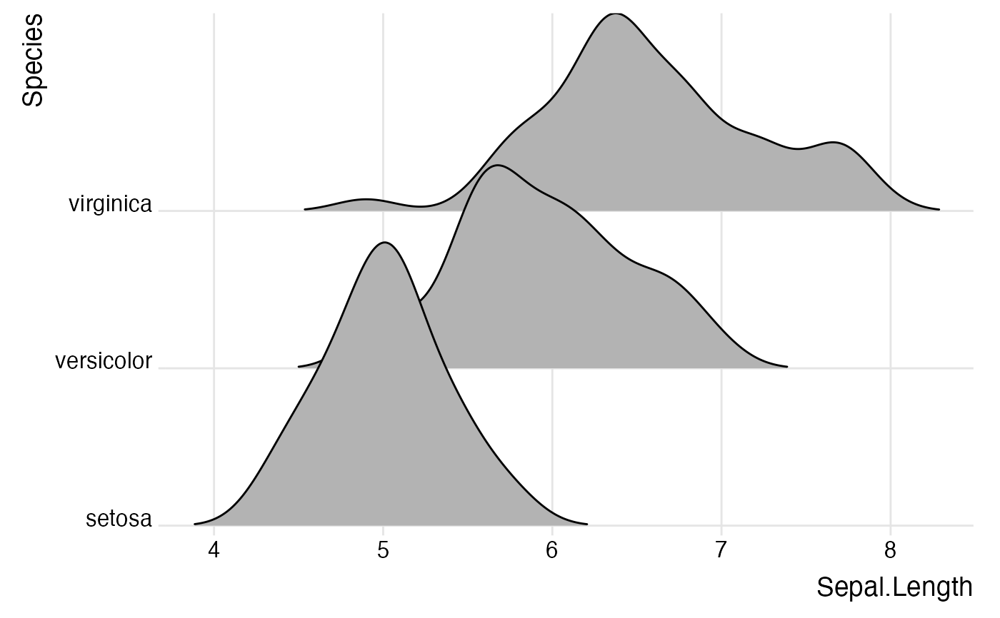
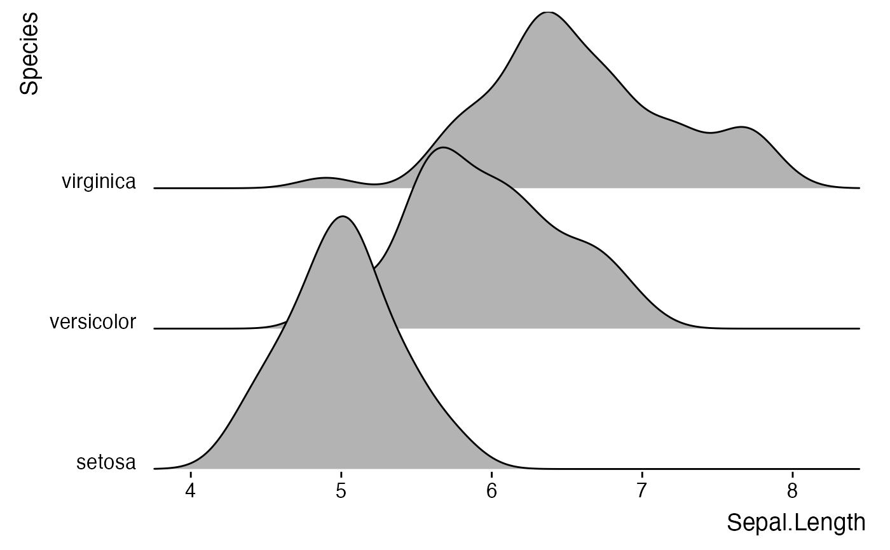

This theme has some special modifications that make ridgeline plots look better, such as properly aligned y axis labels. It can draw plots with and without background grids (see examples).
Usage
theme_ridges(
font_size = 14,
font_family = "",
line_size = 0.5,
grid = TRUE,
center_axis_labels = FALSE
)Arguments
- font_size
Overall font size. Default is 14.
- font_family
Default font family.
- line_size
Default line size.
- grid
If
TRUE(default), a background grid is drawn. IfFALSE, background is left empty.- center_axis_labels
If
TRUE, axis labels are drawn centered. IfFALSE(default), axis lables are drawn right/top-aligned.
Examples
library(ggplot2)
# Example with background grid
ggplot(iris, aes(x = Sepal.Length, y = Species, group = Species)) +
geom_density_ridges(rel_min_height = 0.005) +
scale_y_discrete(expand = c(0.01, 0)) +
scale_x_continuous(expand = c(0.01, 0)) +
theme_ridges()
#> Picking joint bandwidth of 0.181

# Example without background grid
ggplot(iris, aes(x = Sepal.Length, y = Species, group = Species)) +
geom_density_ridges() +
scale_y_discrete(expand = c(0.01, 0)) +
scale_x_continuous(expand = c(0.01, 0)) +
theme_ridges(grid = FALSE)
#> Picking joint bandwidth of 0.181
